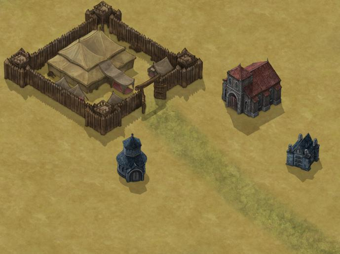
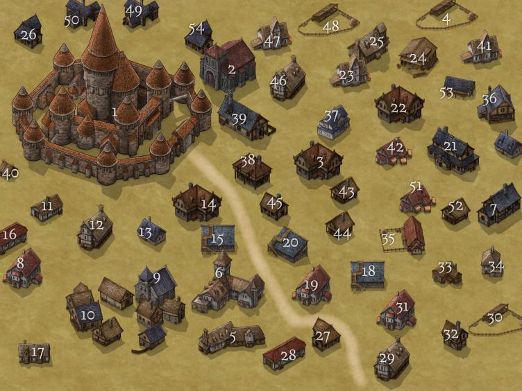

<!DOCTYPE html>
<html style="height: 100%; margin: 0;">
<head>
<title>Map of Valena</title>

<meta name="viewport" content="width=device-width, initial-scale=1.0">

<link rel="stylesheet" href="scripts/leaflet/leaflet.css">

<script src="scripts/leaflet/leaflet.js"></script>

</head>
<body style="height: 100%; margin: 0;">

<div id="map" style="width: 100%; height: 100%; background: #888888; margin: 0;"></div>

<script type="text/javascript">

//variables

var mapSW = [0, 7680],
	mapNE = [7680, 0];


var map = L.map('map').setView([0, 0], 3);

L.tileLayer('map/valena/{z}/{x}/{y}.png', {
	minZoom: 1, 
	maxZoom: 4, 
	continuousWorld: false, 
	noWrap: true,
	crs: L.CRS.Simple,
	}).addTo(map);

   var star = L.icon({
      iconUrl: 'images/star.png',
      iconSize: [25, 22.9],
      iconAnchor: [8, 14],
      popupAnchor: [5 , -5],
      shadowUrl: 'images/marker_shadow.png',
      shadowSize: [25, 22.9],
      shadowAnchor: [6, 14]
    });
var adv = L.icon({
      iconUrl: 'images/Cross-Sword-PNG-Transparent-Image.png',
      iconSize: [35, 32.9],
      iconAnchor: [8, 14],
      popupAnchor: [5 , -5],
      shadowUrl: 'images/marker_shadow.png',
      shadowSize: [25, 22.9],
      shadowAnchor: [6, 14]
    });

//Markers and popups
var marker = L.marker([52, -140], {icon: star}).addTo(map);
marker.bindPopup('<b>Our Heros!</b>');

var marker_arrive = L.marker([-16, -154], {icon: adv}).addTo(map);
        marker_arrive.bindPopup('<br><h1 style="color:black;font-size:15px;">Your Starting Area</h1><p>You have begun here, searching this mysterious lands. Continue your adventure traveller, prove your worth.<p>');
var marker_one = L.marker([67, -167], {icon: adv}).addTo(map);
        marker_one.bindPopup('<br><h1 style="color:black;font-size:15px;">The Coast of the Mainland</h1><p>Sailors are complaining that their ships keep being attacked by a large sea monster, their fisherman being pulled into the sea and killed. The town nearby is beginning to suffer, being a coastal city that relies on their fishermen.<p>');
var marker_two = L.marker([52, -144], {icon: adv}).addTo(map);
        marker_two.bindPopup('<br><h1 style="color:black;font-size:15px;">The Capital: Heart of the Mainland Area</h1><p>This is the capital of this country, holding The King, his wife and children, and his many advisors.<p>');
var marker_three = L.marker([60, -115], {icon: adv}).addTo(map);
        marker_three.bindPopup('<br><h1 style="color:black;font-size:15px;">The Ruins of Velkev</h1><p>The town of Velkev was once prosperous and lively. It is now a wasteland of ash and bone.<p>');
var marker_four = L.marker([68, -104], {icon: adv}).addTo(map);
        marker_four.bindPopup('<br><h1 style="color:black;font-size:15px;">Port City: Ten Ten</h1><p>On the MeraPeak bay is a tiny port city comprised of 250 residents. Tenten, unused to visitors, can often be inhospitable and careless with words. The citizens of Tenten have never encountered wicca and hope to keep it this way. The city is Human Centered, maning they view other races with suspicion.<p>');
var marker_five = L.marker([72, -54], {icon: adv}).addTo(map);
        marker_five.bindPopup('<br><h1 style="color:black;font-size:15px;">Katlermacht: The City of Snow</h1><p>A small city nestled in the mountains, perpetually covered with snow and frost.<p>');
var marker_six = L.marker([63, -10], {icon: adv}).addTo(map);
        marker_six.bindPopup('<br><h1 style="color:black;font-size:15px;">The Snowy Woods</h1><p>Its told these woods are fey touched.<p>');
var marker_seven = L.marker([73, 44], {icon: adv}).addTo(map);
        marker_seven.bindPopup('<br><h1 style="color:black;font-size:15px;">The Abandoned City</h1><p>This city is drearie and dark, buildings falling apart and its townspeople in shambles.<p>');
var marker_eight = L.marker([73, 145], {icon: adv}).addTo(map);
        marker_eight.bindPopup('<br><h1 style="color:black;font-size:15px;">The Wicca Capital: Valvana</h1><p>Valvana is a city set deep under the western mountains. The mountains hold innumerable wicca as well as several armories and transporters. The back of it faces the ocean, making for easy escape/ item restock<p>');
var marker_nine = L.marker([-10, -21], {icon: adv}).addTo(map);
        marker_nine.bindPopup('<br><h1 style="color:black;font-size:15px;">Serenrae: City of Light</h1><p>A bright city, beautiful and prestine. A wonderous marvel of architecture, all in homage of the great gods of this world.<p>');
var marker_ten = L.marker([37, 41], {icon: adv}).addTo(map);
        marker_ten.bindPopup('<br><h1 style="color:black;font-size:15px;">Crater: City in the Sands</h1><p>A city deep in the desert. Hard to get to, hard to escape.<p>');
var marker_eleven = L.marker([16, 89], {icon: adv}).addTo(map);
        marker_eleven.bindPopup('<br><h1 style="color:black;font-size:15px;">The Hole...</h1><p>A town of 4 houses, the people all reported to be religious followers of a hole in the ground.<p>');
var marker_twelve = L.marker([-31, 149], {icon: adv}).addTo(map);
        marker_twelve.bindPopup('<br><h1 style="color:black;font-size:15px;">Vilkeken: Wicca Stronghold</h1><p>The mysterious wicca hold sway over many places...<p>');
var marker_thirteen = L.marker([-69, -153], {icon: adv}).addTo(map);
        marker_thirteen.bindPopup('<br><h1 style="color:black;font-size:15px;">Harvelo: Elven City</h1><p>This large city populates one of the islands of this land, protecting it against the wicca and governing themselves.<p>');
var marker_fourteen = L.marker([-60, -57], {icon: adv}).addTo(map);
        marker_fourteen.bindPopup('<br><h1 style="color:black;font-size:15px;">The Savage Grounds</h1><p>A town of the most unsavory of sorts, all in want of a fight... and they will get it.<p>');
var marker_fifteen = L.marker([-19, 52], {icon: adv}).addTo(map);
        marker_fifteen.bindPopup('<br><h1 style="color:black;font-size:15px;">Treefolk Sanctuary: Itana</h1><p>Despite being mainly comprised of many Shetari, the Itana sanctuary is a home for all that wish it. Harming of nature will be viewed negativly and swift... action, will be taken.<p>');
var marker_sixteen = L.marker([-69, 54], {icon: adv}).addTo(map);
        marker_sixteen.bindPopup('<br><h1 style="color:black;font-size:15px;">The Whistling Woods</h1><p>The wind Whistle here... whistle... whistle... whistle...<p>');
var marker_seventeen = L.marker([-74, 77], {icon: adv}).addTo(map);
        marker_seventeen.bindPopup('<br><h1 style="color:black;font-size:15px;">The Country Port</h1><p>A bustling port with hundreds of different vehicles, airships, sailing charters, teleportation circles. You can go anywhere from here... even to countries beyond...<p>');


//set max bounds shiz

map.setMaxBounds(new L.LatLngBounds(
	map.unproject(mapSW, map.getMaxZoom()),
	map.unproject(mapNE, map.getMaxZoom())
));


</script>

</body>
</html>